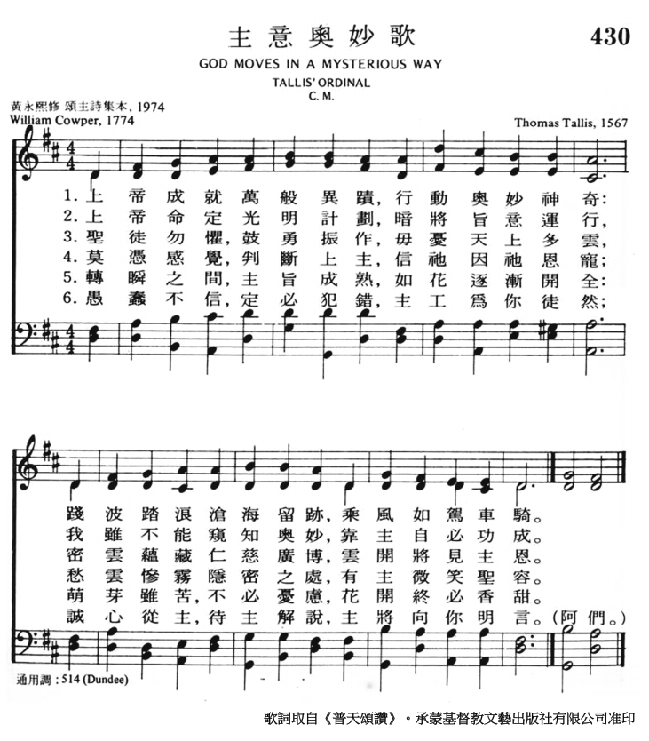
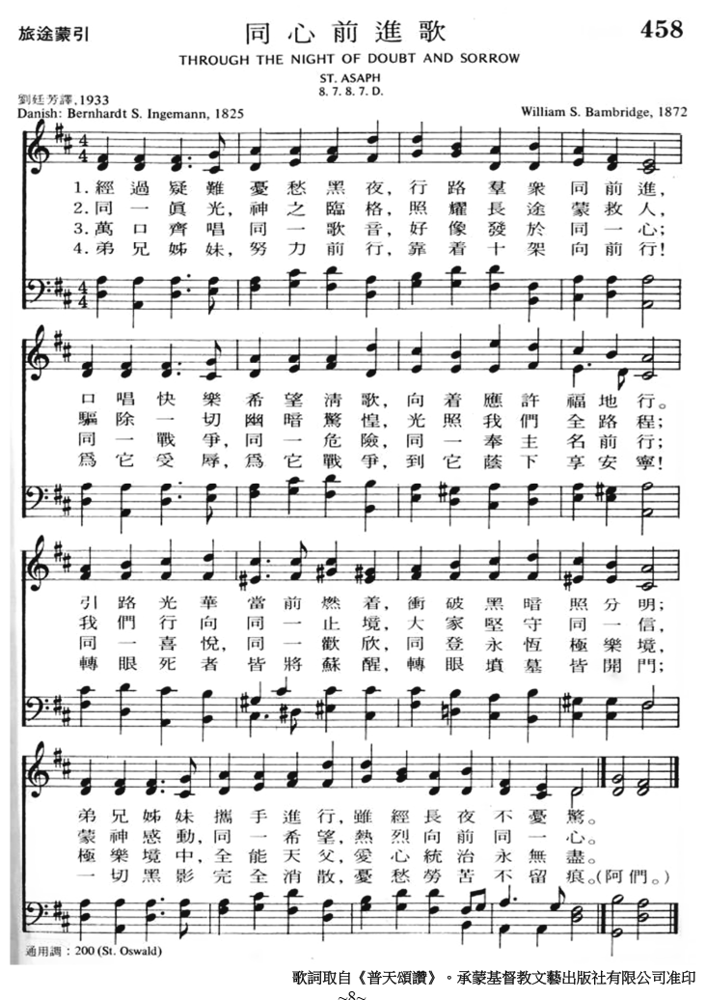

This classic text gains renewed energy
and focus from its recasting here: despite our fear and confusion, we
can trust that God’s providential purposes will eventually be revealed.
In its original source the tune printed here is one of twelve not
assigned to a specific hymn.
1 God moves in a mysterious way
His wonders to perform.
He plants his footsteps in the sea
And rides upon the storm.
2 You fearful saints, fresh courage take;
The clouds you so much dread
Are big with mercy and shall break
In blessings on your head.
3 His purposes will ripen fast,
Unfolding ev'ry hour.
The bud may have a bitter taste,
But sweet will be the flow'r.
4 Blind unbelief is sure to err
And scan his work in vain.
God is his own interpreter,
And he will make it plain.
歌詞:
上主作為何等奧祕，行事偉大神奇；
海洋之中有其擪跡，駕禦風暴飛馳。
聖徒應當鼓勇振奮，不怕天空多雲；
雲中深藏慈愛憐憫，化為恩雨降臨。
莫憑感覺臆斷上主，一心靠主恩典；
愁雲慘霧隱密之處，有主仁慈笑臉。
盲目不信導致錯誤，觀察卻不領悟；
惟神自己洞悉其工，向人啟發顯明。
430 首“主意奧妙歌”

458 首“同心前進歌”

https://youtu.be/bzd5UUPPBqc
Music: PISGAH, Traditional, Kentucky Harmony (1816) Harmony: Southern Harmony
and Musical Companion, William Walker ed. (1854) Arrangement: Nick Holovaty
Performed by the People of Praise Missionaries
https://www.youtube.com/watch?v=F5-DQmhKPY4
"God Moves In A Mysterious Way" by Graham Kendrick is from the 2018 album Keep
The Banner Flying High.
在奧爾尼，牛頓邀請古柏創作聖詩，牛頓是編譯。由此產生了1779年合作出版的《奧爾尼詩集》（Olney
Hymns），其中包括「有一血泉血流盈滿」（There is a fountain fill'd with
blood）和「神的道路奧秘難測」（God moves in a mysterious
way）仍然是古柏的一些最熟悉的詩句。古柏的一些聖詩，以及原本收錄在奧爾尼詩集中的其他幾首，今天保存在「Sacred Harp」中。
1773年，古柏與恩明夫人訂婚，又經歷精神錯亂的攻擊，不僅想像他永遠被打入地獄，而且上帝命令他獻出自己的生命。因為這次生病取消了婚約，但是瑪麗·恩明盡力照顧他，一年後，他開始恢復。1779年，牛頓離開奧爾尼前往倫敦後，古柏開始寫詩歌。瑪麗·恩明建議古柏寫作The
Progress of Error,，在寫完諷刺（satire）後又寫了另外7篇。所有這些均在1782年以Poems by
William Cowper, of the Inner Temple, Esq..為題出版。
N. 127 Jesus! where'er thy people meet,
n. 357 The Spirit breathes upon the word, n. 450 「有一血泉血流盈滿」（There
is a fountain filled with blood） n. 790 我當敬聽主聲音（Hark！My Soul！It is the
Lord） n. 856 To Jesus, the Cro
wn of my hope, n. 871 Far from the
world, O Lord! I flee, n. 885 長久經歷已經表顯（My Lord! how full of sweet
content，譯於1782年), n. 932 What various hindranes we meet, n. 945
願更與神親密同行（Oh，For a Closer Walk With God） n. 965 When darkness long has
veiled my mind, n. 1002 T is my happiness below, n. 1009 O
Lord! in sorrow I resign, (譯於1782年), n. 1029 O Lord! my best desire
fulfill, n. 1043 There is a safe and secret place n. 1060 God
of my life! to thee I call
後來庫樸結識了退休的教牧歐文夫婦（Morley
& Mary Unwin），彼此意氣相投，庫樸大得安慰；歐文家成為他的避風港，並接納他搬進家中；後來隨同他們從亨廷頓（Huntingdon）移居到俄尼（Olney），在那�堙A認識了從販賣黑奴悔改，成為反奴的非國教會名牧牛頓（John
Newton, 1725-1807）。他也關懷社會疾苦，受牛頓影響，二人志同道合，明天道而注重人道，體念奴隸的痛苦，寫詩反對奴役黑人。
牛頓（John
Newton）
牛頓邀庫樸參與聖詩寫作，結果集成俄尼詩集（Olney
Hymns）出版。其中包括庫樸的“寶貴血泉”（There
is a Fountain Filled with Blood），首句為“今有一處寶貴血泉，從救主身發源”。這首聖詩，使許多人得到安慰和堅定信仰，成為基督徒。
另一首更為人熟知的，是“在黑暗中有光照出”（Light
Shining out of Darkness）。是在一次嚴重的情緒低沉時，庫樸決定自殺。他尋死不成，雇了一輛馬車，吩咐車夫駛到河邊橋上，預備跳水終結此生。不料，忽然大霧瀰漫，本來該是輕車熟路的車夫，竟然失迷，找不到庫樸要去的橋。轉來轉去，庫樸卻清醒了，吩咐車夫駕車回到住處。在書桌前，坐下來，他承認自己的罪，悔改，寫下了那首聖詩，其首句是“神的道路奧祕難測”（God
Moves In A Mysterious Way）。
Light Shining Out of Darkness
William Cowper, 1774
Addressed to one another
God moves in a mysterious way
Job 9:10; Is. 55:8; Rom. 11:33
his wonders to perform;
he plants his footsteps in the sea,
Job 38:16; Ps. 77:19; Matt. 14:25; Rev. 10:2
and rides upon the storm.
Ps. 18:10; 104:3; Is. 19:1; 66:15; Nah. 1:3
Deep in unfathomable mines
Job 28; Rom. 11:33
of never-failing skill
he treasures up his bright designs,
Dan. 2:22
and works his sovereign will.
Ye fearful saints, fresh courage take;
Deut. 1:28–29; Ps. 31:13–15; Is. 8:12; Matt. 6:25
the clouds ye so much dread
Gen. 9:12–16; 45:5; Ex. 20:18–20
are big with mercy, and shall break
Zech. 10:1
in blessings on your head.
Deut. 23:5; Ezek. 34:26; Rom. 8:28
Judge not the Lord by feeble sense,
Job 40:7–9; Prov. 3:5
but trust him for his grace;
Ps. 23:6
behind a frowning providence
Gen. 50:19–20
he hides a smiling face.
Job 10:12–13; Is. 45:15; 54:8
His purposes will ripen fast,
Ps. 30:5
unfolding ev’ry hour;
Mark 4:27
the bud may have a bitter taste,
Is. 38:17
but sweet will be the flow’r.
Blind unbelief is sure to err,
Rom. 8:7; 2 Cor. 4:4
and scan his work in vain;
Rom. 1:20–21
God is his own interpreter,
Gen. 40:8; 1 Cor. 2:10
and he will make it plain.
Matt. 10:26; John 13:7; Eph. 1:9
Detractors from Reformed Evangelicalism often remark that the
Reformation took the mystery out of Christianity. Yet William Cowper, a
thoroughgoing Calvinist, here notes that among the most mysterious
aspects of the faith is precisely that thing which makes Reformation
thought so distinctive. Most rational minds can assent to the virgin
birth or the miracles of Christ, if they begin with the right premises.
A supernatural salvation requires a supernatural savior. But when we are
asked in Scripture, in plain prose, to count trials a joy and to believe
all things work together for good we are asked to believe a great
mystery. A hymn to handle such mystery must insist on the only possible
answer to the riddle of theodicy—“God is his own interpreter, and he
will make it plain.”
Knowing how unhelpful it is to speak vaguely about mystery, Cowper
defines his very clearly in the first sentence. It’s not so much that
God is mysterious in his person or in his works, but he is so
in the ways by which he accomplishes those works. The unusual word order
underscores this idea. (Consider the subtle difference if the words are
ordered like normal prose: “God performs his wonders in a mysterious
way.”
The crucial word “moves” is missing. In Cowper’s version,
“perform” carries extra weight because of its role in the stanza and
rhyme.) The second sentence may seem unrelated—a generic
description of God’s omnipotence in Old-Testament imagery of sea and
storm. But Cowper has thereby turned us, reading on this side of the New
Testament, toward Christ’s mysterious walking on water. His person is
not mysterious (“Truly you are the Son of God,” the disciples said), nor
is it mysterious that he would reveal himself in might, but that he
would do so by asserting his sovereignty over nature (not Rome) before a
mere audience of twelve (not the masses) was indeed mysterious. Yet now,
living after his resurrection, we understand his reasons well enough. He
has made it plain.
The second stanza evokes imagery of gems or precious metals with
its illustration of mines and “bright designs.” Note, however, that it
is the skill of God that is the jewel under discussion and the treasures
are his designs. Precious things are often hidden, so that they are
accessible only to the ones to whom they belong. Returning to the storm
imagery in the third stanza, Cowper uses its inherent double
nature—storms are indeed dreadful, but when in need of rain, they are a
blessing. We won’t know until it arrives whether the cloud will bring
crop-destroying hail or blessed rain but we must trust that it will be
the latter. Indeed, trust is the very next idea to be involved. The
picture of God hiding is not easily reconciled with the revealing God of
Scripture until we consider the many illustrations that describe him as
a father. How often have parents swallowed down a smile in order to turn
firm and apply discipline to a child who needed it. The smile remains in
the heart, whatever appearance in the face. And it isn’t a smile that
laughs at the sins because they are small ones. It is a smile that loves
in spite of them.
The last stanza makes Cowper’s point plain even as it promises
that God will make his so. That the unbeliever scans God’s
work is evident because of the error that comes and the vanity of the
inquiry. Contrasting unbelief, however, is not belief directly, but God
himself, whose interpretation is set against the scanning look of the
unbeliever.
Poetic elements do their part to describe this progression from
“mysterious” (first line) to “plain” (last word). For an example of
meaningful rhyme consider the last stanza, which contrasts the keywords
“vain” and “plain.” On one hand, it’s a contrast between the futility of
the unbeliever’s scanning and the clarity of God’s revelation. On the
other hand, it’s also a contrast between the pride, or vanity, of
unbelief and the unpretentious simplicity of what God reveals.
For an example of meaningful rhythm, read aloud the first two
lines of stanza 2:
Unfathomableness coincides with rhythmic irregularity; God’s skill, with
a return to correct meter.
For an example of meaningful alliteration, note how the first
stanza links “moves” with “mysterious,” “way” with “wonders,” “perform”
with “plants,” and “[my]-sterious” with “[foot]-steps” and
“storm.” In stanza 3 “big” and “blessings” frame “break,” the
explosive sounds of which onomatopoetically mark the poem’s abrupt
change from dread to blessing.
DUNDEEmay seem
like an odd fit here because, however good the tune, there’s absolutely
nothing mysterious about it.
It opens with an ascending gesture that repeats with the leap taken out,
and the second line of the stanza is essentially a cadence back
on “do”—the note where we started. The second and third lines reverse
the direction of the first’s stepwise motion.
The fourth line simply reiterates the cadence on “do.” But perhaps this
elegant, plain-speaking melody is exactly right. The hymn’s theme is not
mystery in itself but rather providence, and DUNDEE does
well to express both our humility before providence and the plainness of
the mystery when revealed.[1]
NOTE
[1]
Plain, but not boring. The high D in the third line of the stanza towers
above the rest of the tune in a climax perfect for “he plants his
footsteps” in stanza 1 and “are big with mercy” in stanza 3.
Scripture
References:
st. 1 = Rom. 11:33, Ps. 77:19
st. 3-4 = Ps. 62:1-8
William Cowper
(pronounced "Cooper"; b. Berkampstead, Hertfordshire, England, 1731;
d. East Dereham, Norfolk, England, 1800) is regarded as one of the
best early Romantic poets. To biographers he is also known as "mad
Cowper." His literary talents produced some of the finest English
hymn texts, but his chronic depression accounts for the somber tone
of many of those texts. Educated to become an attorney, Cowper was
called to the bar in 1754 but never practiced law. In 1763 he had
the opportunity to become a clerk for the House of Lords, but the
dread of the required public examination triggered his tendency to
depression, and he attempted suicide. His subsequent hospitalization
and friendship with Morley and Mary Unwin provided emotional
stability, but the periods of severe depression returned. His
depression was deepened by a religious bent, which often stressed
the wrath of God, and at times Cowper felt that God had predestined
him to damnation.
For the last two
decades of his life Cowper lived in Olney, where John Newton (PHH
462) became his pastor. There he assisted Newton in his pastoral
duties, and the two collaborated on the important hymn collection Olney
Hymns (1779), to which Cowper contributed sixty-eight hymn
texts. In addition to his two hymns (also 551) in the Psalter
Hymnal, "There Is a Fountain Filled with Blood" is also often
included in modern hymnals.
Erik Routley (PHH
31) compared this text to a Rembrandt painting, saying it had a
dark background with a strong streak of light falling across it.
That is an apt analogy. Cowper wrote "God Moves in a Mysterious Way"
in 1773 prior to the onset of one of his severely depressive states,
which later that year led him to an unsuccessful suicide attempt.
The text was published in Newton's Twenty-six Letters on
Religious Subjects; to which are added Hymns (1774). It was
also included in Olney Hymns with the heading "light
shining out of darkness" and accompanied by a reference to John 13:7
in which Jesus says, "You do not realize now what I am doing, but
later you will understand." The original stanza 4, omitted in the Psalter
Hymnal, contained the couplet "behind a frowning
providence/He hides a smiling face."
The first line
indicates the focus of the entire text: God's ways may well be
mysterious to us, but God does act! He "works his sovereign will" (st.
2), and someday "he will make it plain" (st. 5). In the meantime,
even in periods of profound doubt and despair, we may trust God's
wisdom.
Liturgical Use:
This fine hymn on divine providence is useful on many occasions of
worship.
--Psalter
Hymnal Handbook
======================== God moves in a mysterious way. W. Cowper. [Providence.]
The commonly accepted history of this hymn is that it was composed
by Cowper in 1773, after an attempt to commit suicide by drowning in
the Ouse at Olney. In the Memoirs of Cowper by Hayley, and
by Southey, as also in that of J. Newton, by Bull, there are painful
details of his insanity in 1773. In Southey there is a distinct
statement to the effect that his mania was suicidal, and that he
made an attempt upon his life in October, 1773. Southey says (1853,
vol. i. p. 174):—
"In the new
character which his delirium had assumed [that it was the will of
God that he should put an end to his life] the same perfect spirit
of submission was manifested. Mr. Newton says ‘Even that attempt
he made in October was a proof of it; for it was solely owing to
the power the enemy had of impressing upon his disturbed
imagination that it was the will of God he should, after the
example of Abraham, perform an expensive act of obedience, and
offer, not a son, but himself.'" (May 26, 1774.)
This is conclusive
as to the intended suicide; but there is no indication in the Memoirs that
after his attack he wrote anything whatever until about April, 1774.
Of this period Southey says:—
"His mind,
though possessed by its fatal delusion, had recovered in some
degree its activity, and in some of his most melancholy moments he
used to compose lines descriptive of his own unhappy state."
(1853, vol. i. p.m.)
To our mind it is
evident that Cowper must have written this hymn, either early in
1773, before his insanity became so intense as to lead him to
attempt suicide in the October of that year, or else in April of
1774, when "he used to compose lines descriptive of his own unhappy
state." Of these dates the latter is the probable of the two, but
neither will
agree with the popular account of the origin of the hymn. Its
publication agrees with this date, as it appeared in J. Newton's Twenty-six
Letters on Religious Subjects; to which are added Hymns, &c, by
Omicron, London, 1774. The actual date is fixed by Newton. He
says:—
"Thursday, July
6th [1774]. Omicron's Letters are now published. May the Lord
accompany them with His blessing. In reading them I could not but
observe how different I appear on paper from what I know myself to
be," &c.
In Omicron's Letters it
is in 6 stanzas of 4 lines, is entitled "Light shining out of
Darkness," and is unsignedition It also appeared in the July number
of the Gospel Magazine for 1774 (p. 307), in the same form
and with the same title; but in this instance it is signed " J. W."
We find it also in R. Conyers's Collection of Psalms & Hymns of
the same year, in the same form and with the same title, but without
signature. It appears again in the Gospel Magazine, Dec,
1777, p. 555, at the end of a letter "On Affliction." This letter is
unsigned. At the close of the hymn these words are added:—
“By Miss
Ussington, late of Islington, who died in May, 1776. Taken from
the original."
In this case the
stanza ii. is omitted; the eight lines of stanzas iii. and iv. are
rearranged; a slight change is made in stanza vi., and the following
is added:—
"When midnight
shades are all withdrawn
The opening day shall rise,
Whose ever calm and cloudless morn
Shall know no low'ring skies."
This uncertainty
about the authorship of the hymn was set at rest in 1779, when J.
Newton gave the original text and title from Omicron’s Letters in
the Olney Hymn Book iii., No. 15, and signed it "C." From
the first it gradually grew in importance and interest, until it has
become one of the most widely known hymns in English-speaking
countries. It has also been translated into several languages,
including Latin, by R. Bingham in his Hymnologia Christiana
Latina, 1871, as “Secretis miranda viis opera numen "; and Dr.
Macgill in hisSongs of the Christian Creed and Life, 1876,
as, "Deus mundum, en, molitur." Montgomery's estimate of this hymn
is very high. He says of it, "It is a lyric of high tone and
character, and rendered awfully interesting by the circumstances
under which it was written — in the twilight of departing reason" (The
Christian Poet, 1825, Preface). Montgomery evidently thought
the hymn was composed before the sad breakdown of 1773.
--John Julian, Dictionary
of Hymnology (1907)
=====================
God moves
in a mysterious way, p. 433, i. In the Salisbury Hymn
Book, 1857, this hymn is altered to "God deigns to move in
mystery."
--John Julian, Dictionary
of Hymnology, Appendix, Part II (1907)
=============
God moves
in a mysterious way, p. 433, i. In the manuscript volume
referred to under Cowper, W., p. 1625. ii., this hymn is given at
pp. 204-5, between a letter from J. Newton dated “Olney, Nov. 4,
1772," and another hymn by Cowper, “'Tis my happiness below," given
as "by Mr. W. C. of Olney, 1773." This supports the conclusion as
set forth on p, 433, i., that the hymn was not the outcome of his
attempted suicide in October 1773. The concluding lines of the hymn
read in the manuscript:— "The bud may have a bitter taste, But wait
to smell the flower." This, as is well known, appeared in print as:—
"The bud may have a bitter taste, But sweet will be the flower." See
Notes and Queries, Sept. 24, 1905.
--John Julian, Dictionary
of Hymnology, New Supplement (1907)
This hymn was written by William Cowper, a man who was afflicted with
mental illness and depression for a large portion of his life. His
illness got so severe that he tried to commit suicide three times. With
treatment and the inspiration of his friend John Newton, he began to
recover and write hymns. This hymn captures the mystery of God’s power,
without questioning God’s goodness. The first line and title of the
hymn, “God moves in a mysterious way,” has become a common saying to
justify strange or tragic occurrences.
Text:
The words to this hymn were written by William Cowper in 1773 right
before he began suffering from depressive illness. His condition got so
bad that he eventually attempted to drown himself. At least part of
Cowper’s hymn writing was influenced by his friendship with John Newton,
who Cowper met when he moved to Olney, England to be under Newton’s
ministry. Sadly, this is believed to be Cowper’s last hymn. He left his
faith after his attempted suicide, sure that he was beyond redemption.
Verse three is, ironically, a very hopeful and encouraging verse: “You
fearful saints, fresh courage take; the clouds you so much dread are big
with mercy and shall break in blessings on your head.”
Tune:
The tune most used for this hymn is DUNDEE, which was first found in the
Scottish Psalter in 1615 and was arranged by Thomas Ravenscroft in 1621.
Although this tune was most often paired with “God Moves in a Mysterious
Way,” it has been known to accompany many other hymn texts. The tune
itself is a happy and pleasant one that, like the words, gives assurance
to those singing or listening to it.
When/Why/How:
This hymn would pair well with many scripture readings, especially
passages involving grief or strife in the lives of righteous people. The
melody, though uplifting in tone, should not be rushed.
Suggested music for this hymn:
For the organ and piano: “Peace
Like a River” contains
a good selection of songs which includes DUNDEE.
“God Moves in a Mysterious Way” by William Cowper Hymnal 1982, No. 677
God moves in a Mysterious way His Wonders to perform, He plants his Footsteps in the Sea, And rides upon the Storm.
The phrase, "God works in mysterious ways," has become a popular
saying for moments when we seek answers that we cannot find. Sometimes
used to try to offer comfort, sometimes used as a way to avoid deeper
conversation, the top definition of the phrase on UrbanDictionary.com is
the slightly humorous but ultimately truthful, "I have no idea why that
happened." While based in scripture1, this phrase actually is derived
from William Cowper's hymn, "God Moves in a Mysterious Way."2
William Cowper (pronounced "cooper"), 1731-1800, the hymn writer
who penned such lasting texts as "There is a Fountain Filled with
Blood," "O! for a Closer Walk with God," and "Sometimes a Light
Surprises," is known for his tumultuous inner life. Born in Berkhamstead,
England, to Rev. John Cowper, William Cowper’s life was marked by
periods of intense depression. He was sent to St. Albans, a mental
institution, for 18 months beginning in 1763, after a suicide attempt on
the morning of his examination to become a clerk at the House of Lords.
At St. Albans he both became convinced of his own damnation and had a
sudden conversion experience that led to his release from St. Albans. He
took up residence in Huntingdon, where he lived with the Unwin family,
through whom he met John Newton, of "Amazing Grace" fame. Not too long
after, Cowper moved to Olney, where his friendship with John Newton
flourished.
This friendship seems to have been an unlikely one. Cowper had
proven himself to be very shy, with high anxiety; the examination for
his Clerkship that caused him so much stress and led to his suicide
attempt was simply speaking briefly in public. Newton, a bold preacher
with his own wild conversion story, was in essence the exact opposite of
Cowper. Nevertheless, the two began collaborating on Olney Hymns, an
idea of Newton’s in 1771. Cowper had been writing poetry all his life,
but this was his primary period of hymnwriting. While Cowper wrote hymns
prolifically for about two years, his mental health took a drastic turn
in 1773. Newton continued to work on the project, and Olney Hymns was
published in 1779. The collection contained 67 hymns by Cowper, and 280
by Newton.
Cowper's religious beliefs were rooted in evangelical Calvinism.
Human depravity and sin make appearances in most of his texts, and God
is the one who saves and redeems individuals from that sin. Particularly
apparent in accounts of his depressive episodes, however, is a strong
belief in unconditional election and limited atonement—the idea that
there are particular people whom God chooses to save—and it is clear
that Cowper had strong doubts about whether he was one of those chosen.
"God Moves in a Mysterious Way" is thought to be the last hymn
Cowper ever wrote, before his attempt to drown himself in 1773, which
ended his involvement in Olney Hymns.3 The God presented in this text is
cosmic, incomprehensible, and ultimately unknowable. Yet, this God is
still seen as having plans for good—not as an uncaring and distant
deity. The title given to the text in The Olney Hymns was “Light Shining
Out of Darkness”, framing the role of God within the hymn as the light
that shines in the darkness, perhaps a reference to the first chapter of
John.
The first two verses of the hymn place God within the
larger context of creation, harkening to psalmic portrayals of the
relationship between God and nature. God is not only the creator, but
continues to move, live, and interact with creation. Cowper poetically
uses two images of "the deep"--one of the sea, and one of the mine--to
create the image of a God who is present in all parts of nature while
also maintaining a sense of vastness and expansion.
The middle verses speak more specifically to the believer
faced with seemingly impossible circumstances. Cowper makes three moves
in which things are not what they seem and God's grace is found in the
face of fear and sorrow. In the third verse, storm clouds are filled not
with turmoil, but with mercy, which rains down blessings. In the fourth
verse, God's smiling face is hidden behind a frowning providence. In the
fifth, the bitter taste of the bud is redeemed by the sweet smell of the
flower.4 The message is clear: those things in life that seem to bring
forth our destruction are being used by God to bring us grace and life.
In some ways, this hymn sparks more questions than it gives
answers. It is the work of a man trying to reconcile his own turbulent
life with the image of a God who is sovereign. The questions of Cowper's
own life echo in this hymn; the proclamation of God as mysterious and
unknowable pour from a man who never truly trusted that God's salvation
extended to him, and yet still found himself drawn to God. Cowper's
questions still resonate through the centuries, as we try to make sense
of our own lives, because they are the questions that theologians,
poets, and all people have always asked. If God is good, why does
tragedy happen? Does God cause it, in order to bring new life? How does
God work in the world?
Cowper realizes that ultimately we cannot know why or how until
that day when God makes it plain. There are times when all we can say
is, "I have no idea why that happened." What we can do in those moments
is stand in awe of, and trust in, this mysterious, powerful, merciful
God.
1 Romans 11:33; "O the depth of the riches both of the wisdom and
knowledge of God! how unsearchable are his judgments, and his ways past
finding out!" (KJV)
2 There is a second person version of this hymn, notably used in
recent Presbyterian hymnals, that changes the first line to, “O God, in
a Mysterious Way”.
3 The formerly accepted story was that "God Moves in a Mysterious
Way" was written after this suicide attempt in gratitude to God,
however, letters have surfaced that date the hymn before this attempt.
The Dictionary of Hymnology excepts as recorded on William Cowper’s
Hymnary.org page are useful in making this distinction.
4 Cowper’s original text here may have been not “but sweet will
be the flower”, as it is seen today, but rather, “but wait! To smell the
flower”, which is a slightly more ambiguous end for the verse.
REFERENCES: Arnold, Richard. Trinity of Discord: The Hymnal and Poetic
Innovations of Isaac Watts, Charles Wesley, and William Cowper. New
York: Peter Lang, 2012.
Ella, George M. William Cowper: The Man of God's Stamp. Dundas,
Ont.: Joshua Press, 2000.
"God Moves in a Mysterious Way." Hymnary.org. http://www.hymnary.org/text/god_moves_in_a_mysterious_way.
Jarvis, Peter G. ""God Moves In a Mysterious Way"" The Expository
Times 114, no. 9 (June 2003): 300-02. doi:10.1177/001452460311400904.
ABOUT THIS MONTH’S GUEST WRITER: Colleen Toole is a former Lovelace Scholar of the Hymn Society
and a soon-to-be graduate of Princeton Theological Seminary. A frequent
staff member during the summers at Montreat Conference Center, Colleen's
primary research concerns the intersection of gender identity and
worship.
This article is provided as a collaboration between Discipleship
Ministries and The Hymn Society in the U.S. and Canada. For more
information about The Hymn Society, visit thehymnsociety.org.
這首詩歌意義非常深刻，寫作技巧高明，實在是聖靈所賜，充滿了對神的敬畏和信心。我們很難找出一首同樣性質的詩歌，能和它相比的。
關於這首詩歌的產生有一段很動人的傳說。有一個清晨，古柏想自殺，結束自己的生命。他獨自駕著一部小馬車，想往離家不遠的奧斯河邊去，準備一去不再回來了。那天陰雨綿綿，他的車在街上轉來轉去，在那樣熟悉的路上竟然找不到一條路可以到奧斯河邊。神把他的眼目遮蔽了，也把所有的路都截斷了，最後他決定不管前面是不是河口，他就往下一跳，了卻他的殘生。但當他跳下去時，不但不是河口，而且正好是他自己家的門口。以後他的朋友們說，雖然那時他的行為是愚昧的，但是他的心卻是為著要絕對順服神。因為他受不住自己不潔的精神和蒙蔽的心魂，總是不能達到完全聖潔的地步，就誤以為神不能再喜悅他。他以為達到完全順服和聖潔，除非他犧牲自己，否則沒有路了。事後他才恍然大悟，覺得神的旨意真是神奇莫測，神的手段、保護、慈愛與智慧，真是我們的思想所不能測度的。神的旨意不是要人死亡，而是要人活在地上，在一切痛苦的經歷中彰顯祂榮耀的生命。無論如何，在這首詩歌中，我們可看見在那時期中，威廉古柏在隱密處，在人所不知道的經歷中，對神有那麼深刻的認識。從這詩歌裡，我們可看見古柏弟兄屬靈生命的真實情形。所以慕發特博士（Dr．Moffatt）在他所著的「教會詩歌手冊」（Handbook
of Church Hymnary）中公正的判斷說，這是一首非常深刻的詩歌。
In six short verses, William Cowper described the providence and sovereignty of
God better than any mortal writer has. Thousands of believers have found comfort
in these words in times of inexplicable sadness and distress.
God, the Judge of all the earth, only does what is right (Gen 18:25). Even
though we cannot understand His ways (Isa 55:8-9), Scripture tells us that His
way is perfect (2Sam 22:31; Psa 18:30), His Word is perfect (Psa 119:7), and His
will is perfect (Rom 12:2). He does not need us to enable Him, nor can any teach
Him. He is eternally self-sufficient. All things do work together for good to
those who love God, to those who are the called … but always according to His
purpose (Rom 8:28). In spite of his frequent bouts of despair and doubt, William
Cowper clung to the Rock, Who never let go of him.
On his deathbed, the clouds lifted, and he exclaimed before he died, “I am not
shut out of heaven after all!” His dear friend John Newton preached at his
funeral, and in anticipation of seeing his dear friend in heaven one day, wrote
and spoke these words:
“Oh! Let thy memory awake!
I told thee so;
I told thee thus would end thy heaviest woe;
I told thee that thy God would bring thee here,
And God’s own hand would wipe away thy tear.
While I would claim a mansion at thy side,
I told thee so – for our Immanuel died.”
History of Hymns: "God Moves in a Mysterious Way" by William
Cowper
BY COLLEEN TOOLE
William Cowper
“God
Moves in a Mysterious Way”
by William Cowper
Hymnal 1982, No. 677
God moves in a Mysterious way
His Wonders to perform,
He plants his Footsteps in the Sea,
And rides upon the Storm.
The phrase, "God works in mysterious ways," has become a popular saying for
moments when we seek answers that we cannot find. Sometimes used to try to
offer comfort, sometimes used as a way to avoid deeper conversation, the top
definition of the phrase on UrbanDictionary.com is the slightly humorous but
ultimately truthful, "I have no idea why that happened." While based in
scripture1, this phrase actually is derived from William Cowper's hymn, "God
Moves in a Mysterious Way."2
William Cowper (pronounced "cooper"), 1731-1800, the hymn writer who penned
such lasting texts as
"There is a Fountain Filled with Blood,"
"O! for a Closer Walk with God," and
"Sometimes a Light Surprises,"
is known for his tumultuous inner life. Born in Berkhamstead, England, to Rev.
John Cowper, William Cowper’s life was marked by periods of intense
depression. He was sent to St. Albans, a mental institution, for 18 months
beginning in 1763, after a suicide attempt on the morning of his examination
to become a clerk at the House of Lords. At St. Albans he both became
convinced of his own damnation and had a sudden conversion experience that led
to his release from St. Albans. He took up residence in Huntingdon, where he
lived with the Unwin family, through whom he met John Newton, of "Amazing
Grace" fame. Not too long after, Cowper moved to Olney, where his friendship
with John Newton flourished.
This friendship seems to have been an unlikely one. Cowper had proven himself
to be very shy, with high anxiety; the examination for his Clerkship that
caused him so much stress and led to his suicide attempt was simply speaking
briefly in public. Newton, a bold preacher with his own wild conversion story,
was in essence the exact opposite of Cowper. Nevertheless, the two began
collaborating on Olney Hymns, an idea of Newton’s in 1771. Cowper had been
writing poetry all his life, but this was his primary period of hymnwriting.
While Cowper wrote hymns prolifically for about two years, his mental health
took a drastic turn in 1773. Newton continued to work on the project,
and Olney Hymns was published in 1779. The collection contained 67 hymns by
Cowper, and 280 by Newton.
Cowper's religious beliefs were rooted in evangelical Calvinism. Human
depravity and sin make appearances in most of his texts, and God is the one
who saves and redeems individuals from that sin. Particularly apparent in
accounts of his depressive episodes, however, is a strong belief in
unconditional election and limited atonement—the idea that there are
particular people whom God chooses to save—and it is clear that Cowper had
strong doubts about whether he was one of those chosen.
"God Moves in a Mysterious Way" is thought to be the last hymn Cowper ever
wrote, before his attempt to drown himself in 1773, which ended his
involvement in Olney Hymns.3 The God presented in this text is cosmic,
incomprehensible, and ultimately unknowable. Yet, this God is still seen as
having plans for good—not as an uncaring and distant deity. The title given to
the text in The Olney Hymns was “Light Shining Out of Darkness”, framing the
role of God within the hymn as the light that shines in the darkness, perhaps
a reference to the first chapter of John.
The first two verses
of the hymn place God within the larger context of creation, harkening to
psalmic portrayals of the relationship between God and nature. God is not only
the creator, but continues to move, live, and interact with creation. Cowper
poetically uses two images of "the deep"--one of the sea, and one of the
mine--to create the image of a God who is present in all parts of nature while
also maintaining a sense of vastness and expansion. The middle verses
speak more specifically to the believer faced with seemingly impossible
circumstances. Cowper makes three moves in which things are not what they seem
and God's grace is found in the face of fear and sorrow. In the third verse,
storm clouds are filled not with turmoil, but with mercy, which rains down
blessings. In the fourth verse, God's smiling face is hidden behind a frowning
providence. In the fifth, the bitter taste of the bud is redeemed by the sweet
smell of the flower.4 The message is clear: those things in life that seem to
bring forth our destruction are being used by God to bring us grace and life.
In some ways, this hymn sparks more questions than it gives answers. It is the
work of a man trying to reconcile his own turbulent life with the image of a
God who is sovereign. The questions of Cowper's own life echo in this hymn;
the proclamation of God as mysterious and unknowable pour from a man who never
truly trusted that God's salvation extended to him, and yet still found
himself drawn to God. Cowper's questions still resonate through the centuries,
as we try to make sense of our own lives, because they are the questions that
theologians, poets, and all people have always asked. If God is good, why does
tragedy happen? Does God cause it, in order to bring new life? How does God
work in the world?
Cowper realizes that ultimately we cannot know why or how until that day when
God makes it plain. There are times when all we can say is, "I have no idea
why that happened." What we can do in those moments is stand in awe of, and
trust in, this mysterious, powerful, merciful God.
1 Romans 11:33; "O the depth of the riches both of the wisdom
and knowledge of God! how unsearchable are his judgments, and his ways
past finding out!" (KJV)
2 There is a second person version of this hymn, notably used in
recent Presbyterian hymnals, that changes the first line to, “O God, in a
Mysterious Way”.
3 The formerly accepted story was that "God Moves in a
Mysterious Way" was written after this suicide attempt in gratitude to
God, however, letters have surfaced that date the hymn before this
attempt. The Dictionary
of Hymnology excepts as recorded on William Cowper’s Hymnary.org page
are useful in making this distinction.
4 Cowper’s original text here may have been not “but sweet will
be the flower”, as it is seen today, but rather, “but wait! To smell the
flower”, which is a slightly more ambiguous end for the verse.
REFERENCES:
Arnold, Richard. Trinity
of Discord: The Hymnal and Poetic Innovations of Isaac Watts, Charles
Wesley, and William Cowper. New York: Peter Lang, 2012.
Ella, George M. William
Cowper: The Man of God's Stamp. Dundas, Ont.: Joshua Press, 2000.
Text:
The words to this hymn were written by William Cowper in 1773 right before he
began suffering from depressive illness. His condition got so bad that he
eventually attempted to drown himself. At least part of Cowper’s hymn writing
was influenced by his friendship with John Newton, who Cowper met when he moved
to Olney, England to be under Newton’s ministry. Sadly, this is believed to be
Cowper’s last hymn. He left his faith after his attempted suicide, sure that he
was beyond redemption. Verse three is, ironically, a very hopeful and
encouraging verse: “You fearful saints, fresh courage take; the clouds you so
much dread are big with mercy and shall break in blessings on your head.”
Tune:
The tune most used for this hymn is DUNDEE, which was first found in the
Scottish Psalter in 1615 and was arranged by Thomas Ravenscroft in 1621.
Although this tune was most often paired with “God Moves in a Mysterious Way,”
it has been known to accompany many other hymn texts. The tune itself is a happy
and pleasant one that, like the words, gives assurance to those singing or
listening to it.
When/Why/How:
This hymn would pair well with many scripture readings, especially passages
involving grief or strife in the lives of righteous people. The melody, though
uplifting in tone, should not be rushed.
Suggested music for this hymn:
For the organ and piano: “Peace Like a River” contains a good selection of songs
which includes DUNDEE.
Luke Getz
Hymnary.org
with
DUNDEE (FRENCH, NORWICH)
LONDON NEW
View fullsize
Fig. 1. John Newton, Twenty Six Letters on Religious Subjects (1774).
Fig. 1. John Newton, Twenty Six Letters on Religious Subjects (1774).
I. Text: Origins
Many people, when quoting this famed first line, might think they are quoting
Scripture, but in reality they are quoting the English poet William Cowper
(1731–1800; pronounced ‘Cooper’). The origin of the hymn is described in two
different stories. The oldest, and perhaps the most reliable, can be found in
the Memoirs of the Life and Writings of William Cowper, Esq. (Rev. ed., London:
Whittingham & Arliss, 1814), pp. 32–33, by Samuel Greatheed. Referring to one of
Cowper’s major psychological breakdowns, the memoir described his self-awareness
of the impending storm:
Of this sad reverse in his experience, he conceived some presentiment as it drew
near, and during a solitary walk in the fields, composed that hymn, of the Olney
collection, beginning, “God moves in a mysterious way,” &c. which is very
expressive of that faith and hope, which he retained at the time, even in
prospect of his severe distress. Mr. Cowper’s relapse occurred in 1773, in his
forty-second year. . . . His spirits, no longer sustained upon the wings of
faith and hope, sunk, with their weight of natural depression, into the horrible
abyss of absolute despair.
In the preface, Greatheed vouched for the accuracy of the volume, stating,
“Nothing is here added, of which I was not either personally a witness, or had
not positive assurance from others that were so” (p. iv).
The origin of the other story is less clear, even though it has had wider
circulation. It can be found as early as 1861 in The British Friend, vol. 19,
no. 3, p. 58:
On the eve of the sad attack of the poet’s constitutional melancholy, in
January, 1773, he composed a hymn, of which the original title was “Light
shining out of darkness.” He firmly believed that the Divine will was that he
should drown himself in a particular part of the river Ouse, two or three miles
from his residence at Olney. He one evening ordered a post-chaise, and desired
the driver to take him to that spot, which the man readily undertook to do, as
he was well acquainted with it. However, several hours were consumed in seeking
it, but in vain. The driver was at last compelled to admit that he had entirely
lost his road. Cowper thus escaped the temptation, returned home, and
immediately wrote that hymn which has ministered comfort to thousands already,
and will be the language of submission and patience to generations yet to come.
It is possible both stories are two parts of the same experience, a divinely
interrupted suicide attempt followed by a stroll through the fields. Some
scholars, including John Julian in his Dictionary of Hymnology (1892), p. 433,
doubt the plausibility of the latter story, based on descriptions from various
accounts that when Cowper had entered his suicidal state, he had stopped writing
and did not resume until April of 1774.
View fullsize
Fig. 2. The Gospel Magazine (July 1774).
Fig. 2. The Gospel Magazine (July 1774).
The hymn was printed three times in 1774, all textually the same. In July 1774,
it was printed in John Newton’s Twenty Six Letters on Religious Subjects, pp.
215-216, in six stanzas of four lines, without music (Fig. 1).
Also in July 1774, it appeared in The Gospel Magazine, p. 307 (Fig. 2), where it
was curiously signed “J.W.” Pseudonyms were fairly common in that publication,
so this could simply be an example of attempted anonymity.
Lastly, the hymn also appeared in Richard Conyers’ Collection of Psalms and
Hymns (London: J. & W. Oliver, 1774), pp. 258-259, unattributed. A few years
later, the hymn was part of the important collection by Newton & Cowper, Olney
Hymns (1779), p. 328.
II. Text: Analysis
The opening lines possibly recall Isaiah 55:8 (“For my thoughts are not your
thoughts, neither are your ways my ways, declares the Lord,” ESV). The second
part of the first stanza reflects God’s powers over storm and sea, as in
passages like Psalm 107:23-30 or Job 38. The second stanza includes ideas from
Romans 11:33 (“Oh, the depth of the riches and wisdom and knowledge of God! How
unsearchable are his judgments and how inscrutable his ways!”). The showers of
blessing in stanza three are probably an allusion to Ezekiel 34:26. The first
part of stanza four has similar sentiments as Proverbs 3:5 (“Trust in the Lord
with all your heart, and do not lean on your own understanding”). The mention of
bitter and sweet in stanza five possibly relates to passages like Proverbs 27:7
or Revelation 10:9-10, although the meaning is a little different here. In the
Olney Hymns printing, the last stanza is annotated with John 13:7 (“Jesus
answered him, ‘What I am doing you do not understand now, but afterward you will
understand’”). Joseph told Pharaoh’s officers in Genesis 40:8, who inquired
about a mysterious dream, “Do not interpretations belong to God?”
This hymn is one of the most significant in the English language. Erik Routley,
in his Hymns and Human Life (London: John Murray, 1952), p. 4, called it “an
outstanding example of terse, epigrammatic, memorable writing. … Consider how
much of its text and thought-form has found its way into our common speech.” In
his Hymns of the Faith (Greenwich, CT: Seabury Press, 1956), p. 40, he wrote,
“This hymn is of a very rare and gracious kind, the hymn of the mystery of God’s
being and acts. It runs so smoothly, its lines are so neat and quotable, its
thought so familiar, that it is easy to miss the genius of it.”
J.R. Watson, in his Annotated Anthology of Hymns (Oxford: University Press,
2002), p. 221, said of this hymn:
It is the Christian’s duty and joy to interpret the signs of God’s providence:
and the concluding verse sums up beautifully the hymn’s subject. Belief is
needed, and then God, who is the great interpreter, will make everything clear.
Without that interpretation, His ways are mysterious and his ‘bright designs’
are hidden. The hymn is therefore one of trust and hope, and the perception of
the goodness of God (even if it seems to be hidden) is the ‘Light shining out of
darkness’ of the hymn’s title.
Tunes
1. DUNDEE
The hymn has been published with a number of different tunes, but it is most
frequently set to DUNDEE, a Psalm tune from The CL Psalmes of David in Meeter
(Edinburgh: Andro Hart, 1615). In that collection, it was called “The French
Toone,” thus the tune is sometimes called FRENCH. It also appears under the name
NORWICH, which was how it was named in the collections of John Playford, as in
The Whole Book of Psalms (London: W. Godbid, 1677). Modern collections continue
to print the tune as it was arranged by Thomas Ravenscroft, in The Whole Booke
of Psalmes (London, 1621), where it appeared with Psalm 36 (Fig. 3) and Psalm
90, melody in the tenor part. The division of the four parts into separate
staves, as seen here, is called choirbook format.
Fig. 3. Thomas Ravenscroft, The Whole Booke of Psalmes (London, 1621). Melody in
the tenor part.
2. LONDON NEW
Cowper’s text is also frequently set to LONDON NEW, another tune with Scottish
roots, coming from The Psalmes of David in Prose and Meeter (1635 | Fig. 4). In
that collection, it was given without text and labeled NEWTOUN TUNE. The name
LONDON NEW and a variation in the melody came shortly thereafter in the
collections of John Playford, starting with Psalms & Hymns in Solemn Musick of
Foure Parts (London: W. Godbid, 1671). The pairing of this tune with Cowper’s
text was popularized via Hymns Ancient & Modern (1861).
Fig. 4. Edward Millar, The Psalmes of David in Prose and Meeter (1635). Melody
in the tenor part.
Fig. 4. Edward Millar, The Psalmes of David in Prose and Meeter (1635). Melody
in the tenor part.
3. Bob Kauflin
In more recent years, Cowper’s text has been reset with new music by composers
for modern worship settings. These newer tunes generally provide a sense of
melancholy and/or humility, qualities not reflected well in the older Scottish
tunes. One such setting is by Bob Kauflin for Sovereign Grace Music (available
here), recorded on the album Worship God Live (2005). Kauflin’s version adds a
refrain, “So God, we trust in You; O God, we trust in You; when tears are great
and comforts few, we hope in mercies ever new; we trust in You.” Kauflin
provided this description of his process for writing the new tune:
I first heard this hymn at a Desiring God conference. I loved the words but
didn’t think the music captured the depth of the lyrics. I didn’t think about it
much until the Indonesian tsunami of 2004, which left tens of thousands dead.
Over the next few weeks I worked on a new tune and a new chorus for the hymn. I
wanted the melody to be more reflective and provide time to think about the
lyrics. In singing Cowper’s words I thought it needed a place where we could
express a faith-filled response, in light of the mercy God has shown us in
Christ.[1]
In 2009, Indelible Grace published a setting by Jeremy Casella on their album
Indelible Grace VI: Joy Beyond the Sorrow. Regarding this setting (available
here), Kevin Twit explained:
One thing that a maturing Christian should understand is that God’s ways are not
our ways, and thus we must always be humble in how we think about God’s work in
our lives. Thinking we have got God “figured out” can be a real barrier to
walking humbly with our God. This hymn is a great reminder of that important
lesson. . . . Newton writes in the preface to the Olney Hymns that he was so
discouraged when Cowper was struck ill that he set aside the project and almost
never completed it. . . . The hymn is a call to trust the Lord, even in the dark
(Isaiah 50:10). But I love that it was written by one who knew firsthand the
difficulty of this.[2]
by CHRIS FENNER
for Hymnology Archive
5 October 2018
rev. 21 May 2019
Footnotes:
Correspondence from Bob Kauflin, 20 May 2019.
Kevin Twit, “God moves in a mysterious way,” Indelible Grace Hymn Book: http://hymnbook.igracemusic.com/hymns/god-moves-in-a-mysterious-way
Related resources:
John Julian, “God moves in a mysterious way,” A Dictionary of Hymnology (London,
1892), p. 433: Google Books
Louis Benson, “God moves in a mysterious way,” Studies of Familiar Hymns, Second
Series (Philadelphia: Westminster Press, 1923), pp. 142-153: Archive.org
Erik Routley, “God moves in a mysterious way,” Hymns and the Faith (Greenwich,
CT: Seabury Press, 1956), pp. 39-50.
Robin A. Leaver, “God moves in a mysterious way,” Hymnal 1982 Companion, vol. 3B
(NY: Church Hymnal Corp., 1994), no. 677.
Nicholas Temperley, “LONDON NEW,” Hymnal 1982 Companion, vol. 3A (NY: Church
Hymnal Corp., 1994), no. 50.
Madeleine Forell Marshall, “God moves in a mysterious way,” Common Hymnsense
(Chicago: GIA, 1995), pp. 93–97.
Paul Westermeyer, “DUNDEE,” Let the People Sing: Hymn Tunes in Perspective
(Chicago: GIA, 2005), p. 110.
“God moves in a mysterious way,” Hymnary.org:
https://hymnary.org/text/god_moves_in_a_mysterious_way
Elizabeth Cosnett, “God moves in a mysterious way,” The Canterbury Dictionary of
Hymnology:
http://www.hymnology.co.uk/g/god-moves-in-a-mysterious-way
“God moves in a mysterious way,” Indelible Grace Hymn Book:
http://hymnbook.igracemusic.com/hymns/god-moves-in-a-mysterious-way
“God moves,” Sovereign Grace Music:
https://sovereigngracemusic.org/music/songs/god-moves/
Cowper was born in 1731 in Berkhamsted, England. His mother died when he was
only 6 years old, leaving him to be raised by his father. Unfortunately, it
seems that he had an unhealthy relationship with his father, who may also have
contributed to Cowper’s difficulties by pushing him into practicing law. He
would abandon this career in his early 30s.
The mental pain Cowper struggled with was primarily depression. He had four
major battles with it through his life, leading him to attempt suicide on
several occasions. He was never successful, however, and God would preserve his
life until death by dropsy in 1800, aged 69.
Cowper apparently became a believer in 1764 while in residence at St. Albans
Insane Asylum. He happened upon a Bible on a bench in the garden, and God used
John 11 and Romans 3:25 to open his eyes to the goodness of Jesus and the
sufficiency of his atoning work.
After his conversion, Cowper’s fellowship was primarily with Christians on the
Calvinistic side of the Evangelical Revival that was taking place in the Church
of England at that time. Throughout the rest of his life he remained convinced
of God’s sovereignty and goodness, even if at times he had great difficulty
believing he himself was a beneficiary of them.
Cowper’s hymn writing came as a result of his friendship with John Newton. They
became friends in 1767 when Cowper moved to Olney, England to be under Newton’s
ministry.
Newton saw Cowper’s bent
to melancholy and reclusiveness and drew him into the ministry of visitation
as much as he could. They would take long walks together between homes and
talk of God and his purposes for the church. Then in 1769 Newton got the idea
of collaborating with Cowper on a book of hymns to be sung by their church. He
thought it would be good for Cowper’s poetic bent to be engaged.
In the end Newton wrote
about 208 hymns and Cowper wrote 68. The hymnal was
published in 1779. Besides “Amazing Grace,” Newton wrote “How Sweet the Name
of Jesus Sounds” and “Glorious Things of Thee Are Spoken” and “Come, My Soul
Thy Suit Prepare.” Cowper wrote “God Moves in a Mysterious Way” and “There is
a Fountain Filled with Blood” and “O for a Closer Walk with God.” (Piper)
The hymn “God Moves in a Mysterious Way” is a combination of assertions about
God’s goodness, sovereignty and wisdom along with commands to take courage and
trust in him. Cowper’s use of the metaphors of storms, mines, smiles, and
flowers illustrate this meaning in a timeless way. The hymn is a beautiful
expression of the kind of faith that sustained Cowper through long periods of
darkness and despair.
We cannot yet claim to know all the mysteries of God’s plan for William Cowper’s
life. In time, as Cowper himself says, God will make plain his bright designs.
But until then we can praise God for one of the fruits that is already
evident–this hymn. Only he knows how many saints have had their faith sustained
amidst storms and sorrows by these words. It reminds us that many of the
greatest hymns grow out of life’s most difficult circumstances.